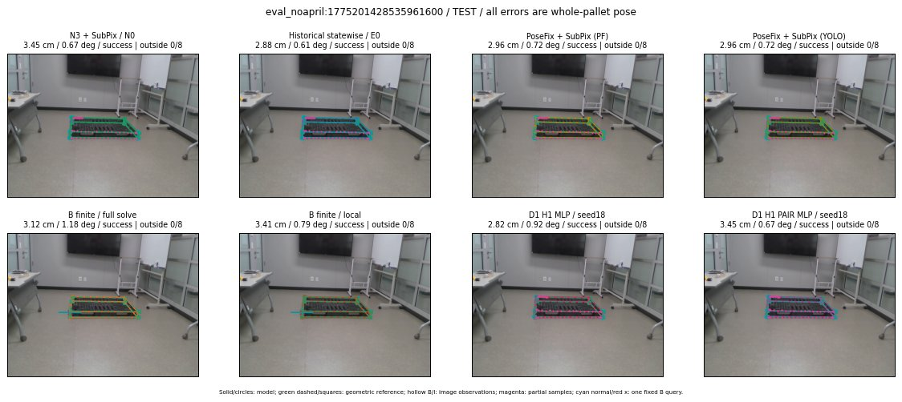

Whole-pallet pose errors; reference is a fixed geometric annotation, not certified physical GT.

Scores are uncalibrated logits. N0 retention is a numerical pose alias; it differs from H0 none or B fallback. B/I and profiles in baseline/B panels are original observations; L panels use new D1 observations. Only one deterministic supported B query is shown in a thumbnail; full support counts are below. Grey privacy rectangles edit the display copy only and are unrelated to O states; all observations were measured on original pixels. Thumbnails use JPEG quality85; detailed scientific panels are PNG.
| Method | Whole pose / cm, deg | Actual source | Selected ID | Score | Archived candidates | Eligible | N0 retained | H0 none | Fallback | Finite profiles |
|---|---|---|---|---|---|---|---|---|---|---|
| Raw YOLO + F | 5.66 cm / 1.08 deg / failure | OTHER | None | N/A | N/A | N/A | False | N/A | None | N/A |
| N3 + SubPix / N0 | 3.45 cm / 0.67 deg / success | N0 | None | N/A | N/A | N/A | True | N/A | None | N/A |
| Historical statewise / E0 | 2.88 cm / 0.61 deg / success | E0_REGENERATED | None | N/A | N/A | N/A | False | N/A | False | N/A |
| PoseFix raw | 4.54 cm / 0.96 deg / success | OTHER | None | N/A | N/A | N/A | False | N/A | None | N/A |
| PoseFix + SubPix (PF) | 2.96 cm / 0.72 deg / success | OTHER | None | N/A | N/A | N/A | False | N/A | False | historical support records 9; finite audit N/A |
| PoseFix + SubPix (YOLO) | 2.96 cm / 0.72 deg / success | OTHER | None | N/A | N/A | N/A | False | N/A | False | historical support records 9; finite audit N/A |
| Historical L, seed18 | 3.45 cm / 0.67 deg / success | N0 | N0 | N/A | 67 | 67 | True | True | True | N/A |
| Historical B fixed bank | 2.91 cm / 0.79 deg / success | OTHER | G10/ORIGINAL_WD/sample/0 | N/A | N/A | N/A | False | N/A | False | N/A |
| Historical B full | 3.00 cm / 1.18 deg / success | OTHER | NEW/B/ORIGINAL_WD/h0/LOGGED/G13/ORIGINAL_WD/outline_consider/33/PROPOSED_NATIVE_YAW_0 | N/A | N/A | N/A | False | N/A | False | N/A |
| Historical edge full | 2.32 cm / 1.19 deg / success | OTHER | NEW/edge/ORIGINAL_WD/h0/LOGGED/G13/ORIGINAL_WD/outline_consider/33/PROPOSED_NATIVE_YAW_0 | N/A | N/A | N/A | False | N/A | False | N/A |
| Historical AB full | 3.13 cm / 1.18 deg / success | OTHER | NEW/AB/ORIGINAL_WD/h0/LOGGED/G13/ORIGINAL_WD/outline_consider/33/PROPOSED_NATIVE_YAW_0 | N/A | N/A | N/A | False | N/A | False | N/A |
| B finite / fixed bank | 2.91 cm / 0.79 deg / success | OTHER | G10/ORIGINAL_WD/sample/0 | N/A | N/A | N/A | False | N/A | False | 28/28 |
| B finite / full solve | 3.12 cm / 1.18 deg / success | OTHER | NEW_FINITE/B/ORIGINAL_WD/h0/LOGGED/G13/ORIGINAL_WD/outline_consider/33/PROPOSED_NATIVE_YAW_0 | N/A | N/A | N/A | False | N/A | False | 28/28 |
| B finite / local | 3.41 cm / 0.79 deg / success | OTHER | NEW_FINITE/B/ORIGINAL_WD/h0/N0_LOCAL_SAME_PHYSICAL_POSE/ORIGINAL_WD | N/A | N/A | N/A | False | N/A | False | 28/28 |
| Edge finite / full solve | 2.32 cm / 1.19 deg / success | OTHER | NEW_FINITE/edge/ORIGINAL_WD/h0/LOGGED/G13/ORIGINAL_WD/outline_consider/33/PROPOSED_NATIVE_YAW_0 | N/A | N/A | N/A | False | N/A | False | 28/28 |
| D0 H0 MLP / seed18 | 3.45 cm / 0.67 deg / success | N0 | N0 | 3.4903006553649902 | 33 | 33 | True | True | True | N/A |
| D0 H0 MLP / seed19 | 3.45 cm / 0.67 deg / success | N0 | N0 | 3.733830451965332 | 33 | 33 | True | True | True | N/A |
| D0 H0 MLP / seed20 | 3.45 cm / 0.67 deg / success | N0 | N0 | 1.0960328578948975 | 33 | 33 | True | True | True | N/A |
| D0 H1 MLP / seed18 | 2.91 cm / 0.79 deg / success | OTHER | G10/ORIGINAL_WD/selected | -0.4327152371406555 | 33 | 33 | False | False | False | N/A |
| D0 H1 MLP / seed19 | 3.45 cm / 0.67 deg / success | N0 | N0 | -0.7213561534881592 | 33 | 33 | True | False | False | N/A |
| D0 H1 MLP / seed20 | 2.91 cm / 0.79 deg / success | OTHER | G10/ORIGINAL_WD/selected | -1.5484460592269897 | 33 | 33 | False | False | False | N/A |
| D1 H0 MLP / seed18 | 3.45 cm / 0.67 deg / success | N0 | N0 | 7.375158786773682 | 33 | 33 | True | True | True | N/A |
| D1 H0 MLP / seed19 | 3.45 cm / 0.67 deg / success | N0 | N0 | 7.363861560821533 | 33 | 33 | True | True | True | N/A |
| D1 H0 MLP / seed20 | 3.45 cm / 0.67 deg / success | N0 | N0 | 6.902709484100342 | 33 | 33 | True | True | True | N/A |
| D1 H1 MLP / seed18 | 2.82 cm / 0.92 deg / success | OTHER | WD0/ORIGINAL_WD/selected | 0.23384356498718262 | 33 | 33 | False | False | False | N/A |
| D1 H1 MLP / seed19 | 2.91 cm / 0.79 deg / success | OTHER | G10/ORIGINAL_WD/selected | 0.2034827023744583 | 33 | 33 | False | False | False | N/A |
| D1 H1 MLP / seed20 | 3.45 cm / 0.67 deg / success | N0 | N0 | -0.237062007188797 | 33 | 33 | True | False | False | N/A |
| D1 H1 ROLE AFFINE / seed18 | 2.91 cm / 0.79 deg / success | OTHER | G10/ORIGINAL_WD/selected | 0.3148646354675293 | 33 | 33 | False | False | False | N/A |
| D1 H1 ROLE AFFINE / seed19 | 3.45 cm / 0.67 deg / success | N0 | N0 | -0.10085561871528625 | 33 | 33 | True | False | False | N/A |
| D1 H1 ROLE AFFINE / seed20 | 2.91 cm / 0.79 deg / success | OTHER | G10/ORIGINAL_WD/selected | 0.0904538631439209 | 33 | 33 | False | False | False | N/A |
| D1 H1 PAIR MLP / seed18 | 3.45 cm / 0.67 deg / success | N0 | N0 | -0.5532194972038269 | 33 | 2 | True | False | False | N/A |
| D1 H1 PAIR MLP / seed19 | 3.45 cm / 0.67 deg / success | N0 | N0 | -0.21594122052192688 | 33 | 2 | True | False | False | N/A |
| D1 H1 PAIR MLP / seed20 | 3.45 cm / 0.67 deg / success | N0 | N0 | 0.3126845359802246 | 33 | 2 | True | False | False | N/A |
| D1 H1 PAIR ROLE AFFINE / seed18 | 2.88 cm / 0.61 deg / success | E0_REGENERATED | E0_REGENERATED | 0.021333005279302597 | 33 | 2 | False | False | False | N/A |
| D1 H1 PAIR ROLE AFFINE / seed19 | 2.88 cm / 0.61 deg / success | E0_REGENERATED | E0_REGENERATED | 0.005970500409603119 | 33 | 2 | False | False | False | N/A |
| D1 H1 PAIR ROLE AFFINE / seed20 | 2.88 cm / 0.61 deg / success | E0_REGENERATED | E0_REGENERATED | 0.06002204865217209 | 33 | 2 | False | False | False | N/A |
| Regenerated common E0 | 2.88 cm / 0.61 deg / success | E0_REGENERATED | E0_REGENERATED | N/A | N/A | N/A | False | N/A | False | N/A |